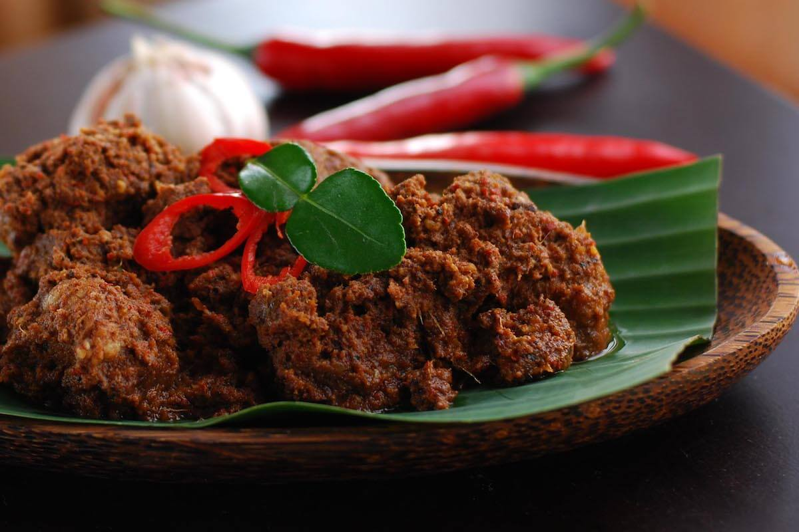
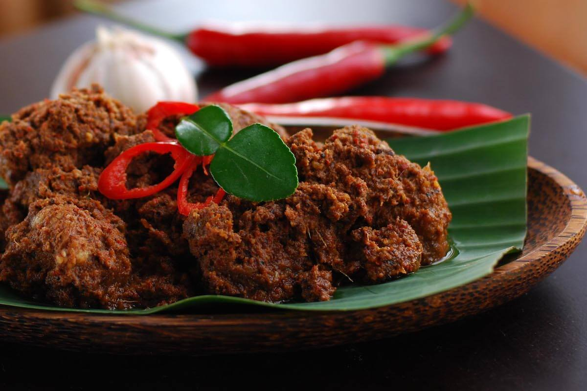

Beranda
Website ini menampilkan ragam kuliner khas Indonesia yang menggugah selera dan pastinya memikat lidah. Temukan kelezatan makanan dari berbagai daerah yang kaya akan rempah-rempah dan bumbu tradisional. Jelajahi keanekaragaman masakan dari Sabang sampai Merauke, dan temukan rahasia di balik setiaphidangan yang menjadikan Indonesia sebagai surga bagi pecinta kuliner. Mari menikmati keindahan cita rasa dan kekayaan buaya melalui halaman beranda kami.
Aneka Ragam Resep
Berikut adalah beberapa resep yang mungkin bisa kamu coba di rumah. Kuliner khas Indonesia yang kaya akan rasa dan aroma yang memikat.
Tempat Makan Kuliner Khas Indonesia
Anak kost masih ada yang kebingungan tiap harinya mau makan apa? Ini ada beberapa rekomendasi tempat makanan khas Indonesia yang mungkin tertarik buat kamu cobain nih.
Galeri Kuliner Khas Indonesia
Galeri kuliner khas Indonesia ini akan menampilkan beberapa gambar dari makanan khas Indonesia yang pastinya bikin kamu ngiler!!
 

Order Kuliner Khas Indonesia
Jika kamu ingin memesan kuliner khas Indonesia tapi kamu sedang tidak ingin pergi keluar, ini dia solusinya.